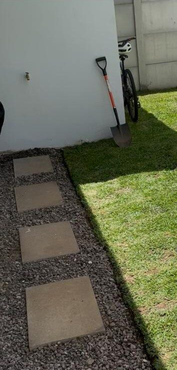
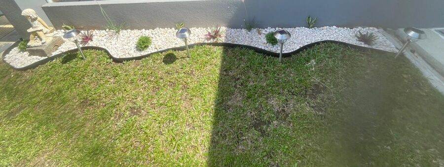
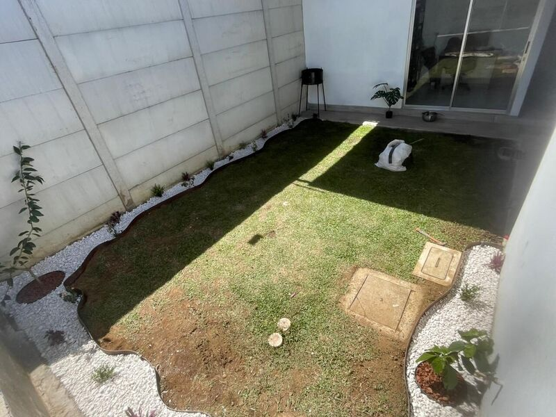
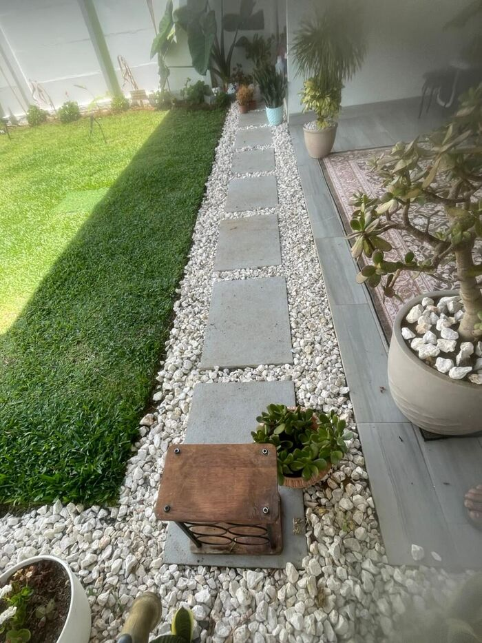

Nuestros servicios
En Eco Vida ofrecemos los siguientes servicios para mejorar jardines y zonas verdes. Haga clic en cualquier tarjeta para cotizar su próximo servicio.

Corte
Realizamos el corte básico del zacate para mejorar el orden y la apariencia general de la propiedad.

Corte y línea de jardín
Además del corte, marcamos la línea de jardín para dejar bordes más limpios y una mejor presentación visual.

Corte, línea de jardín y limpieza de maleza
Incluye corte, detalle de línea de jardín y eliminación de maleza para dejar el terreno más limpio y uniforme.

Paisajismo
Diseñamos una propuesta visual más completa para embellecer la propiedad según el estado del terreno y del zacate.